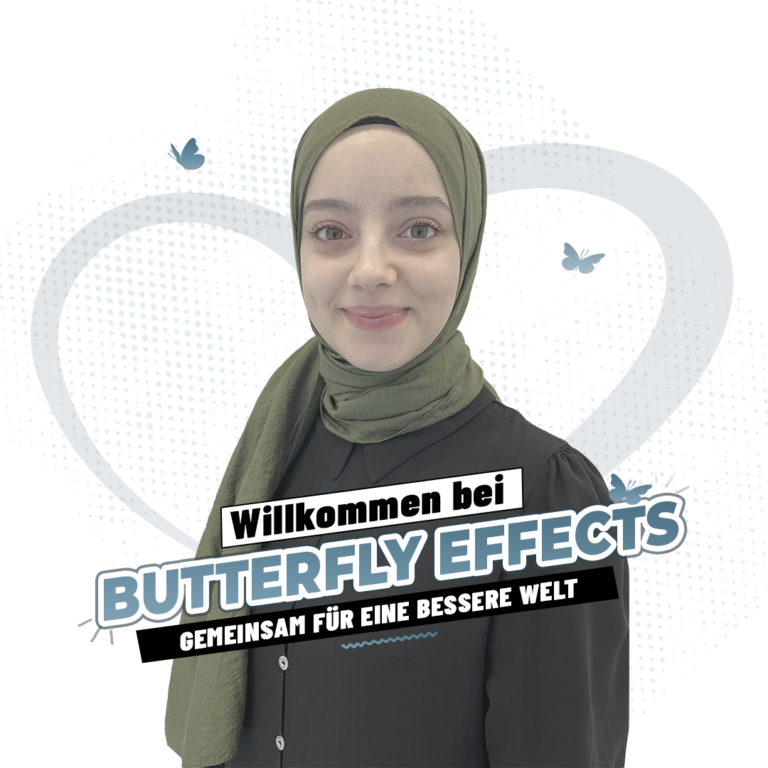
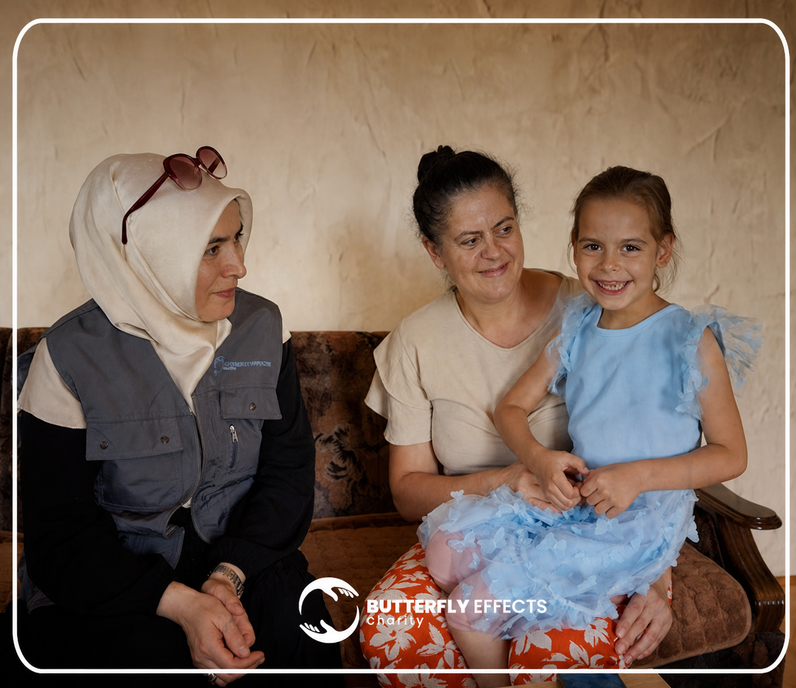
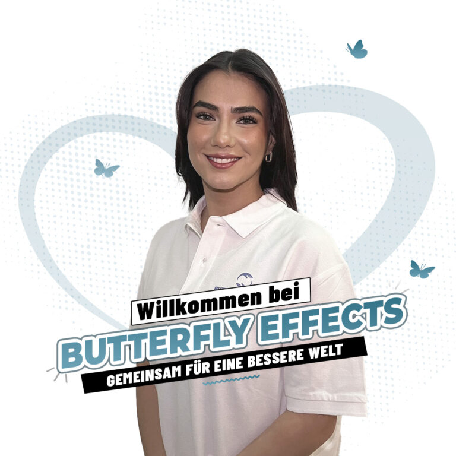
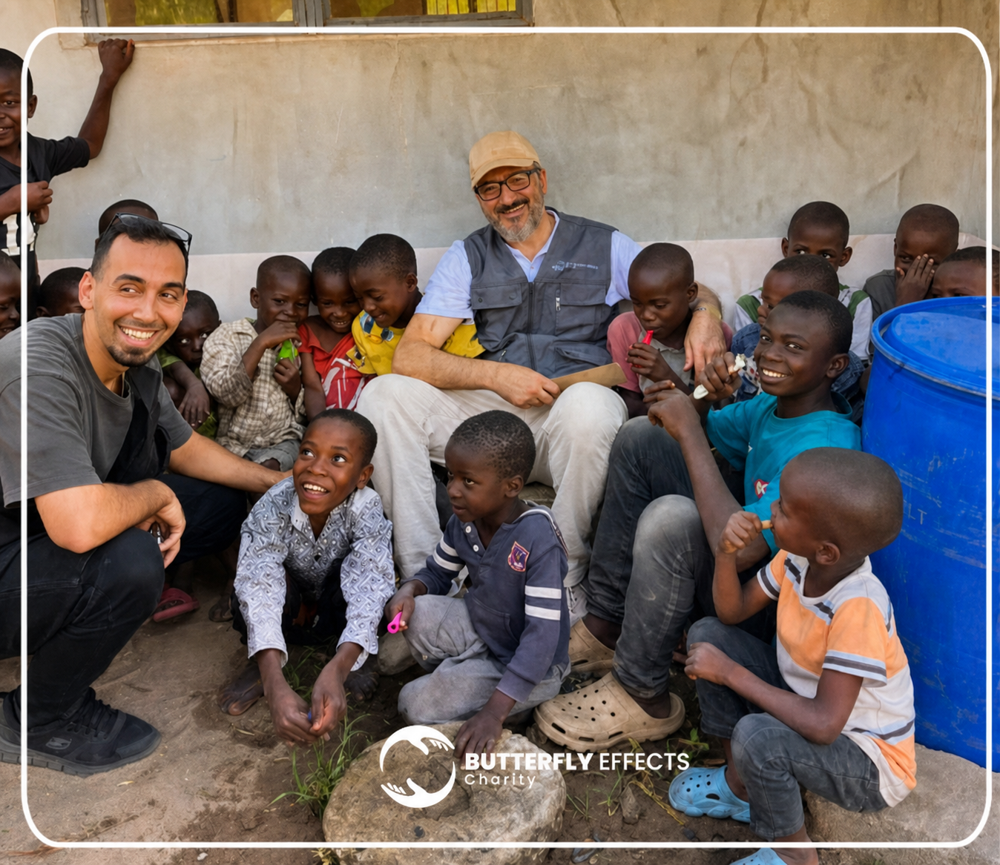

Mitmachen
Es gibt viele Wege, Verantwortung zu übernehmen.
Zeit, Wissen, Reichweite oder regelmäßige Unterstützung: Wählen Sie die Form des Engagements, die zu Ihnen passt.
Sechs Möglichkeiten
Jeder Bereich führt zu einer eigenen Seite.
Die großen Bild-Text-Flächen sind vollständig klickbar und erklären bereits vor dem Öffnen, was Sie erwartet.
Ehrenamtlich helfen
Projekte begleiten, Veranstaltungen unterstützen, organisieren, übersetzen oder direkt in der Gemeinschaft mitwirken.

Fördermitglied werden
Monatliche Beiträge schaffen Planungssicherheit und eine stabile Grundlage für langfristige Projekte.
Als Unternehmen helfen
Projektpartnerschaften, Sachleistungen, Corporate Volunteering oder gemeinsame Spendenaktionen glaubwürdig gestalten.

Eigene Aktion starten
Zu einem Anlass, in der Schule, im Verein oder im Freundeskreis eine konkrete Hilfsaktion organisieren.

Fachwissen einbringen
Beratung, Bildung, Organisation, Kommunikation oder Technik mit beruflicher Erfahrung stärken.

Projekt teilen
Geprüfte Projektinformationen weitergeben und andere Menschen auf konkrete Hilfe aufmerksam machen.
